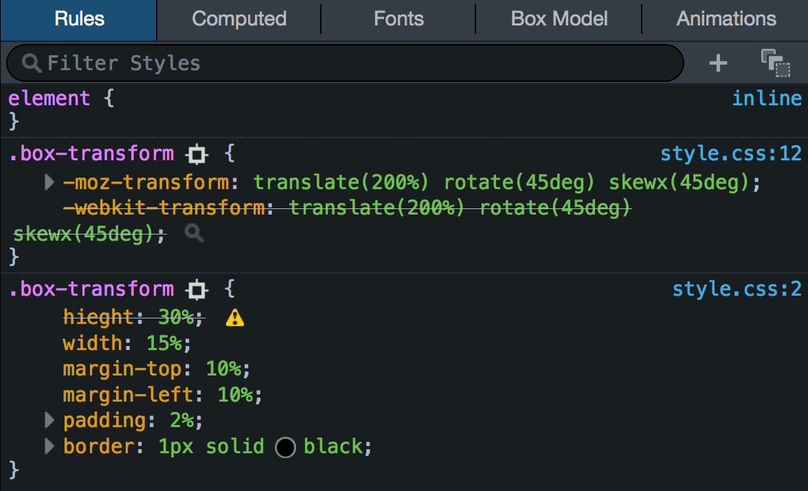

Sintaxis y Selectores Css
Para empezar debemos entender que es el css el cual de manera resumida es un lenguaje de diseño gráfico para definir
y crear la presentación de un documento estructurado escrito en un lenguaje de marcado.
Para ello se usan selectores que definen sobre qué elementos se aplicará un conjunto de reglas CSS.
Como ejemplo veremos los siguientes selectores basicos
-Selector de tipo
Selecciona todos los elementos que coinciden con el nombre del elemento especificado.
Sintaxis: eltname
Ejemplo: input se aplicará a cualquier elemento input.
-Selector de clase
Selecciona todos los elementos que tienen el atributo de class especificado.
Sintaxis: .classname
Ejemplo: .index seleccionará cualquier elemento que tenga la clase "index".
/* Seleccionara Todos los elementos de la clase class="spacious" */
.spacious {margin: 2em;}
-Selector de ID
Selecciona un elemento basándose en el valor de su atributo id. Solo puede haber un elemento
con un determinado ID dentro de un documento.
Sintaxis: #idname
Ejemplo: #toc se aplicará a cualquier elemento que tenga el ID "toc".
-Selector universal
Selecciona todos los elementos.
Opcionalmente, puede estar restringido a un espacio
de nombre específico o a todos los espacios de nombres.
Sintaxis: * ns|* *|*
Ejemplo: * se aplicará a todos los elementos del documento.
https://developer.mozilla.org/es/docs/Web/CSS/CSS_Selectors